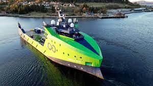

Suena a ciencia ficción: barcos transoceánicos sin nadie a bordo. Pero esta visión del futuro está llegando... y antes de lo que piensas.Puedes verlo en un fiordo noruego, donde un enorme barco de color verde limón pone a prueba su navegación.
A primera vista parece un barco cualquiera. Sin embargo, si miras más de cerca, verás todo el equipo de alta tecnología. Cámaras, micrófonos, radares, GPS y toda clase de comunicaciones por satélite.
"Añadimos muchos equipos adicionales y lo diseñamos especialmente para que sea lo que llamamos 'robótico'", dice Colin Field, jefe de sistemas remotos de la empresa estadounidense-británica Ocean Infinity (OI).
